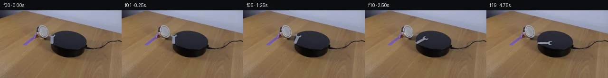

![首帧]()

Round 00
2026-11-05T10:19:56.492613+00:00像素候选变化代码 +182/−0inspection 更新
pixels 97ce5674af6c833f · code 37922cf0a1688cb4
查看本轮 generate.py 真实 diff
--- previous/generate.py
+++ current/generate.py
@@ -0,0 +1,182 @@
+"""Local photograph-layer animation. No network, pretrained model, or renderer."""
+from pathlib import Path
+import json
+import math
+import numpy as np
+from PIL import Image, ImageDraw, ImageFont
+from scipy.ndimage import gaussian_filter, map_coordinates, maximum_filter
+from artifact_io import save
+
+ROOT = Path(__file__).resolve().parent
+S = 6
+H, W = 144, 256
+PIVOT = np.array([109.5, 69.4])
+DEPTH = 0.67
+
+
+def reconstruct_background(source):
+ """Replace only the wrench footprint, analytically separating wood/top/rim."""
+ yy, xx = np.mgrid[:H, :W]
+ # Local dark tabletop and wood samples, taken from this image only.
+ top = source.copy().astype(float)
+ wood = source.copy().astype(float)
+ for y in range(49, 74):
+ for x in range(103, 118):
+ top[y, x] = source[y, min(x + 14, 133)]
+ wood[y, x] = 0.65 * source[y, 102] + 0.35 * source[y, 103]
+ # Trace the hidden left outline from visible perimeter pixels above/below it.
+ ys = np.array([48, 49, 50, 51, 52, 53, 54, 55, 56, 57, 58,
+ 59, 60, 61, 62, 63, 64, 65, 66, 67, 68, 69, 70, 71, 72, 73, 74])
+ xs = np.array([115.3, 114.2, 113.0, 111.9, 110.9, 110.0, 109.2,
+ 108.5, 108.0, 107.4, 107.0, 106.8, 106.6, 106.6,
+ 106.7, 106.9, 107.2, 107.6, 108.1, 108.7, 109.4,
+ 110.2, 111.1, 112.2, 113.5, 114.8, 116.4])
+ edge = np.interp(yy, ys, xs)
+ coverage_top = np.clip((xx - edge + 0.65) / 1.3, 0, 1)
+ # The short exposed cylindrical rim is below the top's left-front outline.
+ side_edge = 106.6 + np.maximum(yy - 64, 0) * 0.18
+ side_coverage = np.clip((xx - side_edge + 0.65) / 1.3, 0, 1)
+ side_coverage *= np.clip((yy - 63.0) / 2.0, 0, 1)
+ side_col = np.zeros_like(top)
+ side_col[:] = np.array([25.0, 24.0, 25.5])
+ side_col += (np.clip(yy - 66, -2, 7) * 0.18)[..., None]
+ base = wood * (1 - side_coverage[..., None]) + side_col * side_coverage[..., None]
+ base = base * (1 - coverage_top[..., None]) + top * coverage_top[..., None]
+ # Smooth border restricted to the original wrench area. All other pixels stay exact.
+ area = np.zeros((H, W), float)
+ area[50:72, 104:116] = 1
+ area[51:56, 103:117] = 1
+ area[70:73, 106:114] = 1
+ return source * (1 - area[..., None]) + base * area[..., None], area
+
+
+def extract_wrench(source, background, area):
+ """Decontaminate a subpixel matte using the reconstructed background."""
+ lum_src = source.mean(axis=2)
+ lum_bg = background.mean(axis=2)
+ alpha = np.clip((lum_src - lum_bg) / np.maximum(146 - lum_bg, 20), 0, 1) * area
+ # Constrain to the observed metal contour; the concave jaw remains open.
+ outline = Image.new('L', (W*S, H*S), 0)
+ d = ImageDraw.Draw(outline)
+ pts = [(103.4,52.0),(104.1,50.7),(105.5,50.6),(106.3,53.0),
+ (107.7,53.4),(109.5,53.7),(111.7,53.1),(112.9,51.0),
+ (114.7,51.1),(115.7,52.5),(115.6,54.2),(113.9,55.8),
+ (112.0,56.7),(112.0,69.4),(111.2,71.0),(107.0,71.0),
+ (105.8,70.1),(106.2,57.0),(104.4,55.7),(103.4,54.3)]
+ d.polygon([(round(x*S), round(y*S)) for x,y in pts], fill=255)
+ contour = np.asarray(outline.resize((W,H), Image.Resampling.LANCZOS), float)/255
+ alpha *= np.clip(contour * 1.65, 0, 1)
+ alpha[alpha < 0.022] = 0
+ fg = np.empty_like(source, dtype=float)
+ fg[:] = [139, 145, 153]
+ m = alpha > 0
+ fg[m] = background[m] + (source[m] - background[m])/np.maximum(alpha[m,None], .10)
+ fg = np.clip(fg, 0, 255)
+ return fg, alpha
+
+
+def supersample(arr):
+ im = Image.fromarray(np.float32(arr), mode='F')
+ return np.asarray(im.resize((W*S,H*S),Image.Resampling.BICUBIC),float)
+
+
+def animate(source, background, fg, alpha):
+ a_hi = np.clip(supersample(alpha),0,1)
+ prem = np.stack([supersample(fg[...,c]*alpha) for c in range(3)],axis=-1)
+ y, x = np.mgrid[:H*S,:W*S]
+ xy = np.stack([(x+.5)/S-.5-PIVOT[0], (y+.5)/S-.5-PIVOT[1]],axis=0).reshape(2,-1)
… diff truncated; 95 more lines …